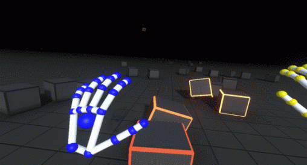

Augmented Reality & Virtual Reality
Voor de eerste opdracht heb ik drie toepassingsgebieden gekozen, waarbij ik voor elk gebied een Augumented (AR) of Virtual Reality (VR) concept verzonnen heb.
Concept 1
Het eerste concept kan zijn voor een museum. Hierbij maak je gebruik van AR. Dit is een app en wanneer je bij een bordje van een tentoonstelling komt kun je het voorwerp in ar zien. Hierdoor krijgen bezoekers een veel beter beeld, waar iets over gaat en hoeft de tentoonstelling in dit geval niet altijd echt botten te bevatten. Dit zal en voor het museum handiger zijn denk bijvoorbeeld aan kosten. En voor de gebruiker maakt het niks uit, die hebben toch altijd en overal hun telefoon of tablet meer naartoe genomen.
Concept 2
Het tweede concept kan voor iedereen zijn. Maar het is vooral bedoeld voor auto liefhebbers of bijvoorbeeld mensen die een auto willen gaan kopen. Het heeft te maken met VR. Het is namelijk mogelijk om van elke auto het interieur te zien in Virtual Reality. Dit is voor mensen die van auto’s houden gaaf, want die kunnen elke auto die ze graag van binnen zouden willen zijn even opzoeken en bekijken. Maar ook bijvoorbeeld als iemand zich wil oriënteren voordat hij of zij een aankoop doet. Dit kan een app zijn voor een mobiel, zodat je aan een card board voor VR al genoeg hebt.
Concept 3
Het derde concept bestaat uit een app voor voetballiefhebbers. Deze kunnen in de app aangeven wel stadion ze graag zouden willen zien en deze zal in AR op het scherm verschijnen. Hierdoor hoeven ook de mensen die niet altijd een kaartje voor een rondleiding kunnen betalen toch het stadion zien. De buitenkant van het stadion is vaak erg indrukwekkend en overal anders. Dit kun je natuurlijk later ook verder uitbreiden naar kleedkamers, waar vaak een hele grote douche, zwembad en jacuzzi staat.

Onderzoek
Leap motion
Als toevoeging op de Oculus Rift kun je een sensor genaamd “Leap Motion” van Orion toevoegen of op de bril plakken. Deze Sensor kan je jouw eigen handen registeren en vervolgens portretteren in een virtuele wereld. Daarna kun je met je handen interactie hebben in die wereld. Zo kun je een blokje creëren door met je vingers naar elkaar te gaan en deze vervolgens uit te trekken.
Meer info: www.leapmotion.com/product/vr
Google is eerder dan Apple met eigen AR-meetapp
Google heeft zijn AR-app Measure waarmee je met je smartphonecamera de maat van objecten opmeet beschikbaar gesteld. Het bedrijf is daarmee eerder met een eigen AR-meetapp dan Apple, dat binnenkort met eenzelfde app met dezelfde naam komt.
Begin juni demonstreerde Apple zijn nieuwe AR-app Measure. Die app is als het ware een digitaal meetlineaal waarmee je met de iPhone-camera wijst op een object en de afmetingen dankzij augmented reality meteen kan zien in de omgeving.
Zulke apps bestaan al langer. Google had al de app Measure in smartphones met zijn Tango-technologie, zoals de Lenovo Phab2 Pro. Die technologie heeft intussen plaatsgemaakt voor Googles nieuwe AR Core-platform voor toepassingen met augmented reality.
Nu heeft Google de app Measure ook beschikbaar gemaakt voor Android-smartphones die AR Core ondersteunen.
Google is daarmee Apple te snel af. Apple-gebruikers kunnen de Measure-app pas verwachten als iOS 12 wordt gelanceerd. Apples Measure-app is dan wel beschikbaar voor alle iPhones met dat nieuwe systeem.
Zweeds kledingmerk in Augumented reality
TWINKLEDe investering betreft een mobiele applicatie waarmee consumenten kleding en outifts online kunnen testen met hun eigen gecreëerde 3D avatar, die ze kunnen aanpassen naar hun eigen uiterlijk. 'Met het product kunnen ze verschillende stijlen mixen en matchen. Die kunnen ze vervolgens met hun vrienden delen', aldus Pouya Boland, ceo van Chiquelle.
Verschil maken
Het merk ziet de combinatie van augmented reality en e-commerce als iets dat de komende jaren groot gaat worden. 'Dat is waarom we al de techniek samen met Figuratic gebruiken, om het verschil te maken in de Zweedse en Europese e-commerce markt', aldus het merk.Nederlandse shop
Chiquelle werd zes jaar geleden gelanceerd in thuisland Zweden. Het merk opende een Nederlandse webshop in 2013 maar sloot deze amper twee jaar later wegens problemen met iDeal. 'We konden deze betaalmethode niet aanbieden aan Nederlandse klanten, wat toch wel een probleem is in een land waar een meerderheid van de shoppers iDeal gebruikt als betaalmiddel.'Reflectie
Tot op heden heb ik weinig met AR of VR gedaan. Ik heb zelf thuis wel een soort cardboard, waarin ik mijn mobiele telefoon kan stoppen en dan een soort Virtuele Reality kan ervaren. Door een youtube filmpje op te zetten bijvoorbeeld. Met AR heb ik nog nooit iets gedaan. Dit lijkt me wel iets wat in de toekomst een stuk groter kan gaan worden. Kijk ook naar de onderzoek opdracht die ik heb gedaan. Daar zit heel veel potentie in om in de komende jaren veel mee te kunnen doen.